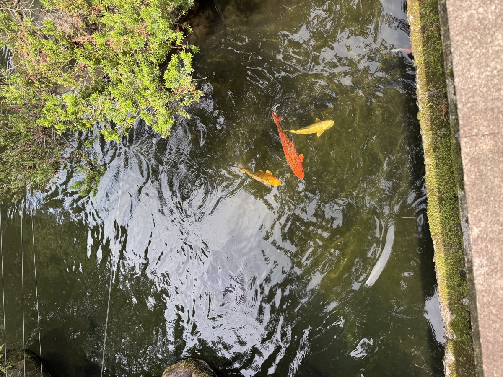

はじめに
少し時間ができたので、CASA SORAのある大津市から気軽に行ける建部大社へ散歩に行ってきました。
境内の池を覗くと、色とりどりの錦鯉がゆったりと泳いでいて、思わず足が止まってしまいました。赤・橙・金・黒・白……これだけ多くの鯉が一堂に泳ぐ様子は、見ているだけで不思議と気持ちが落ち着きます。
建部大社ってどんな場所？
建部大社は、滋賀県大津市に鎮座する由緒ある神社です。日本武尊（ヤマトタケルノミコト）を祀り、「近江国一之宮」として古くから多くの人に親しまれてきました。
境内は落ち着いた雰囲気で、地元の方の散歩コースとしても人気です。観光地というより、日常のなかにそっと溶け込んでいる——そんな神社です。
池の錦鯉に癒される
今回一番の目当てはこの鯉たちでした。
苔むした岩と緑がかった水面のなかを、鮮やかな錦鯉が群れをなして泳いでいます。エサを求めて水面に集まってくる姿は愛嬌たっぷりで、スマホを向けるのを忘れられませんでした。

日本では昔から鯉は「生命力」や「出世」の象徴とされています。力強く泳ぐ鯉を眺めながら、なんだか自分も前向きな気持ちになれた気がしました。
🎏 まとめ
- 大津市にある建部大社は近江国一之宮の由緒ある神社
- 境内の池で泳ぐ錦鯉が圧巻で、癒し効果抜群
- 地元の方の散歩コースとしても人気のスポット
- 気軽に立ち寄れる距離感が、日常のリフレッシュにぴったり
- CASA SORA近隣のおすすめお散歩スポットです🎏